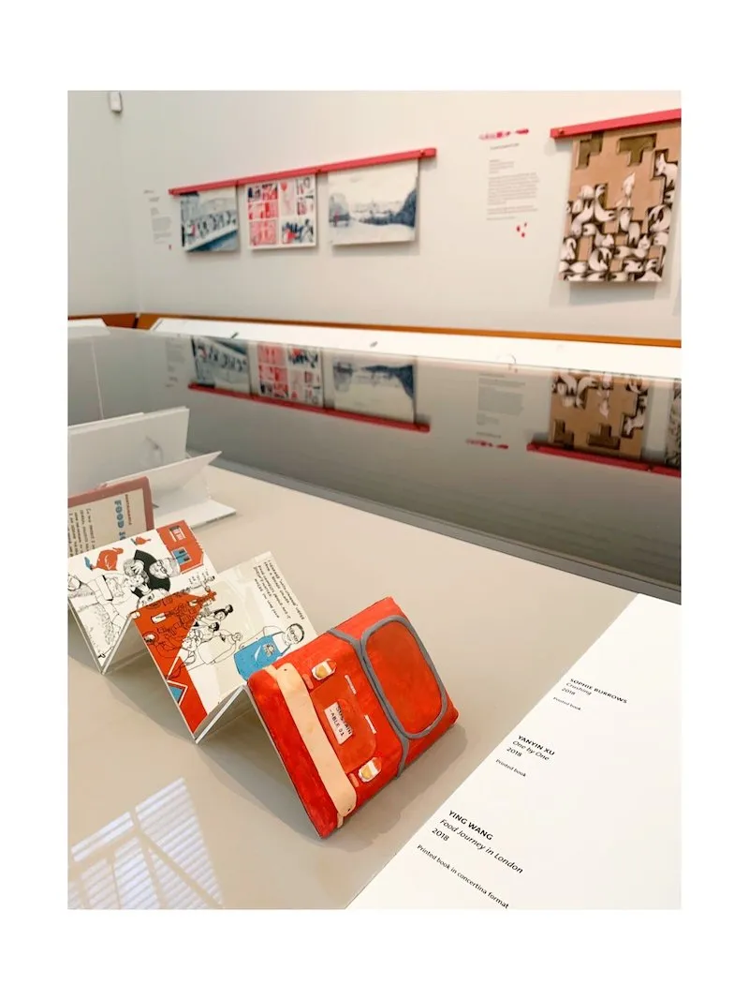
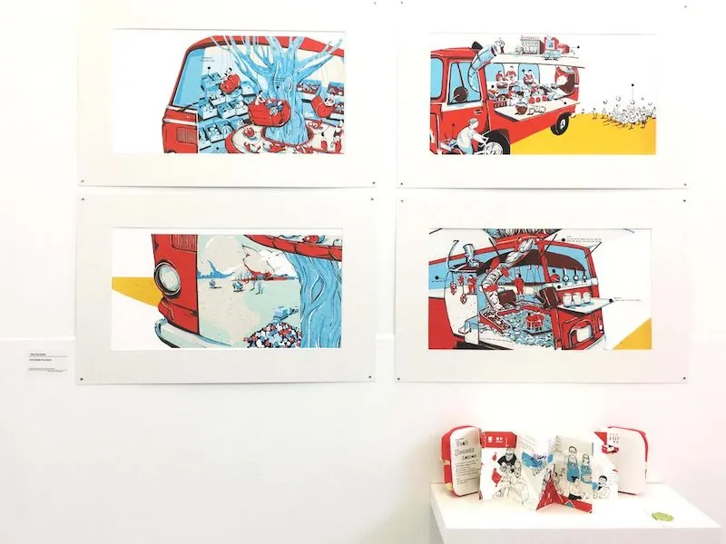
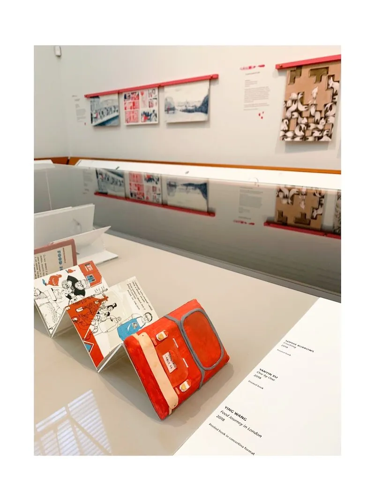
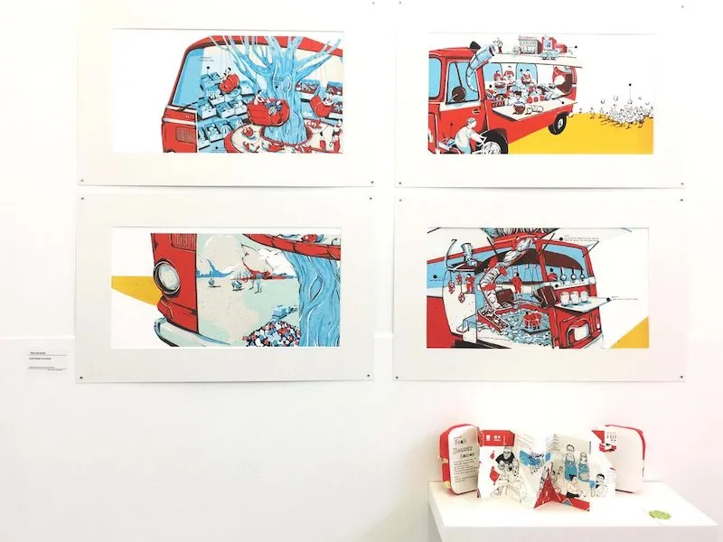
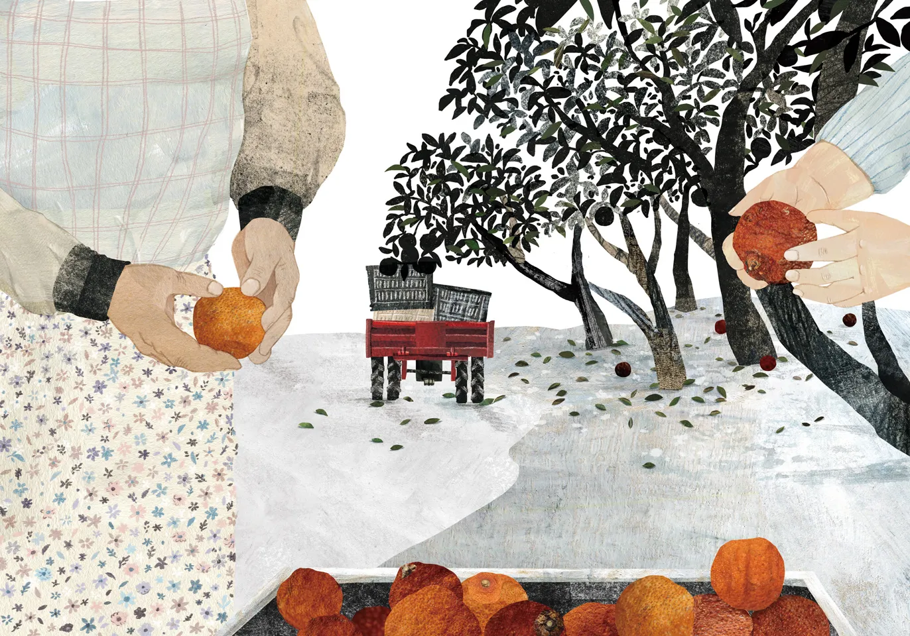
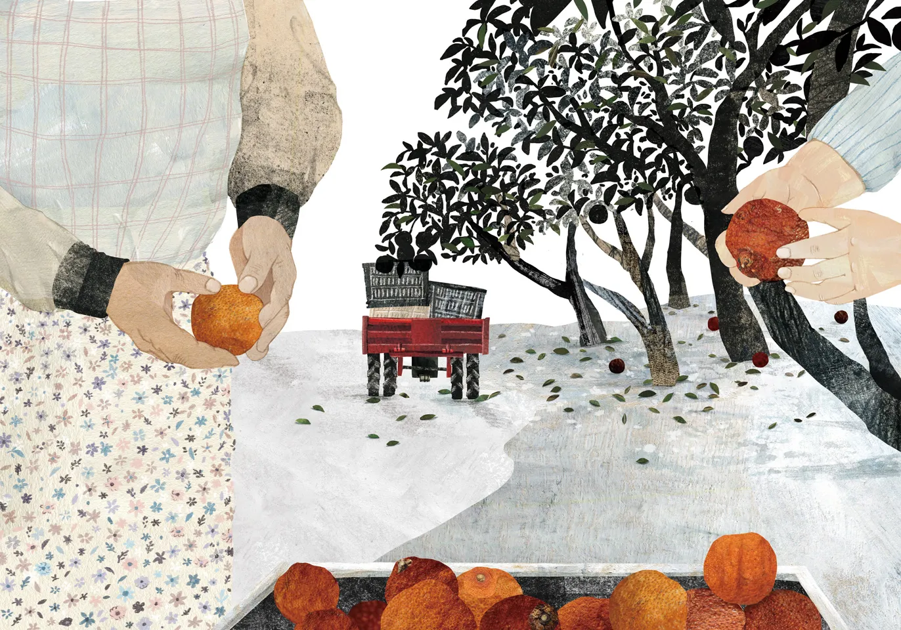

 
 


 

HI I AM YING
I am a Taiwanese illustrator, currently based in Taiwan.
I grew up in the mushroom farm which owned by my grandfather, I guess that's part of the reason I am fascinated by food and plants. Growing herbs and baking pastries are my new meditations.
Therefore, food and plants are mainly my illustration topic.
I also enjoy meeting people from different background.
This year, I started to focus on reportage illustration. Combining the interviews and illustration, my aim is to bring more public awareness to different issues we currently encountering in our society.
王盈穎，插畫工作者，現居台灣。
畢業於倫敦藝術大學視覺插畫研究所，作品多為拼貼媒材，主題專注於食物、環境與自然節氣。作品曾入圍2019英國維多莉亞與亞伯特博物館插畫獎．（V&A Illustration Award ） 、美國3x3 插畫獎。
2018年於倫敦始發展餐車紀實插畫，聚焦城市剩食、經濟動物與季節性作物議題．透過走訪城市中的菜園與農場、搜集故事與案例，發展一系列紀實插畫．2019年回到台灣，開始專注環境與食物關係．從風土節氣的日常作物、都市裡可食用的野草採集．到實踐野草廚房烹調，希望透過五感體驗結合插畫，提高人們對於周遭環境的感知與對問題的意識。